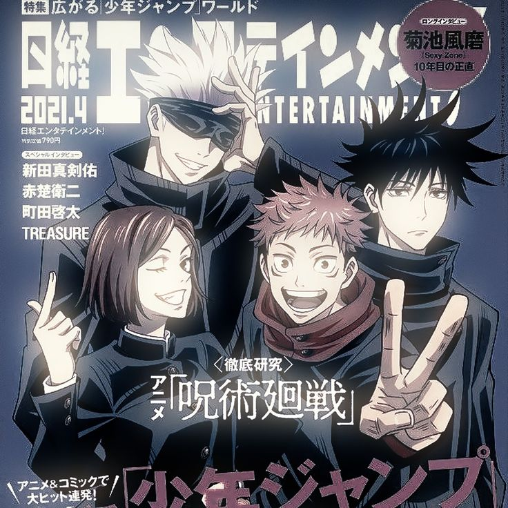

01. LA SERIE "WOKE"
La Revolución de la Animación
Descubre la obra que rompió los esquemas tradicionales. Analizamos cómo esta producción integró nuevas narrativas sociales y técnicas visuales que han cambiado la forma en que consumimos animación moderna.
VER MÁS DETALLES
02. JUJUTSU KAISEN
Energía Maldita y Combates Épicos
Sumérgete en el mundo de los hechiceros de Shibuya. Exploramos la historia de Yuji Itadori y por qué MAPPA ha logrado la mejor calidad de animación de la década.
EXPLORAR UNIVERSO
03. SPY × FAMILY
Espionaje y Vida Familiar
¿Puede un espía, una asesina y una telépata formar la familia perfecta? Un análisis sobre la mezcla perfecta entre comedia, acción y ternura que cautivó al mundo.
VER ARCHIVOS SECRETOS
04. EUPHORIA
Estética, Neón y Realidad
Más allá del brillo y el maquillaje. Una inmersión en la cinematografía de HBO y los crudos relatos juveniles protagonizados por Zendaya.
ANALIZAR ESTÉTICA
RESUMEN DE CONTENIDO ACADÉMICO
| Sección | Género Principal | Elemento Destacado |
|---|---|---|
| Serie Woke | Social / Animación | Revolución Narrativa |
| Jujutsu Kaisen | Shonen / Acción | Calidad de Animación |
| Spy × Family | Comedia / Acción | Dinámica Familiar |
| Euphoria | Drama Juvenil | Fotografía y Neón |
Categorías de Análisis:
- Impacto en la cultura pop
- Técnicas de dibujo y animación
- Cinematografía y paleta de colores
- Desarrollo de personajes
- Recepción de la crítica
- Banda sonora y música original